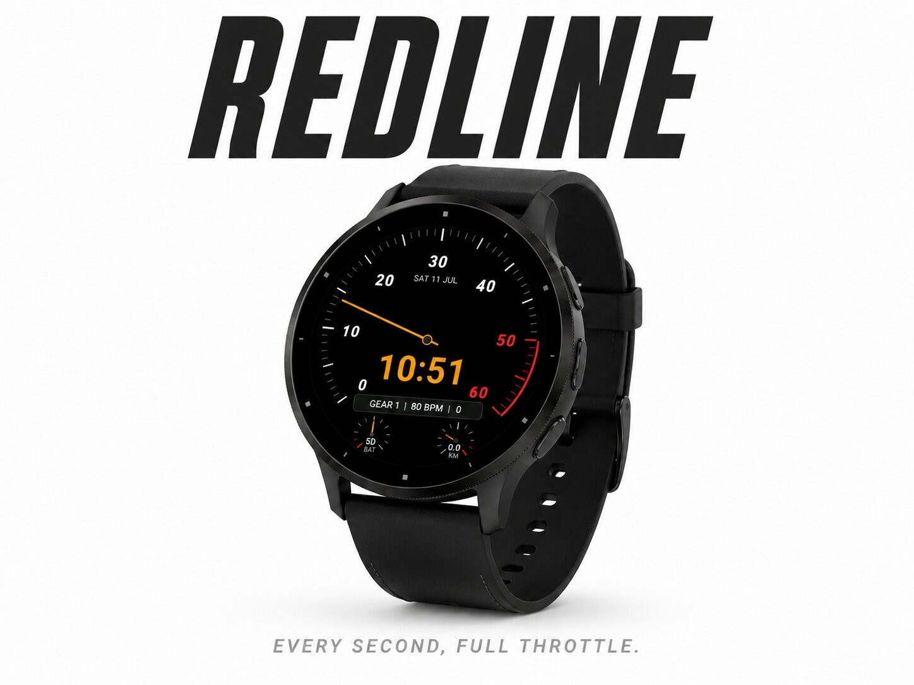
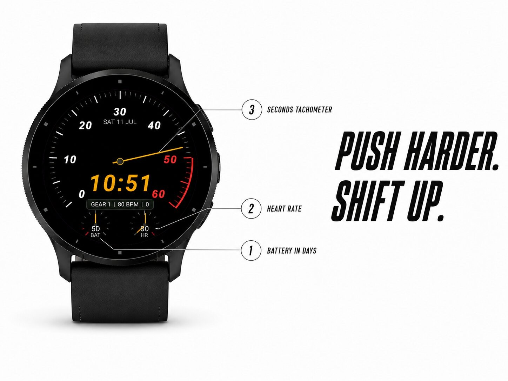
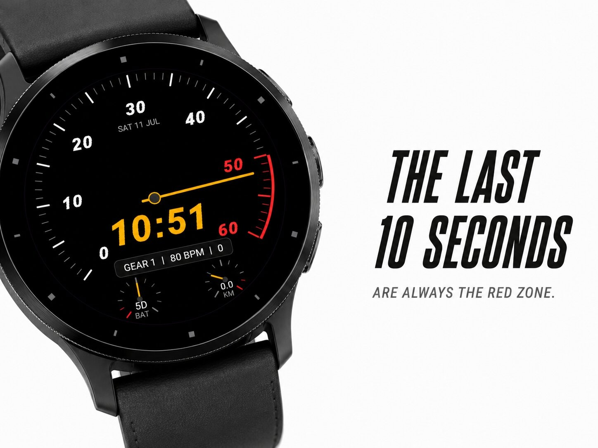
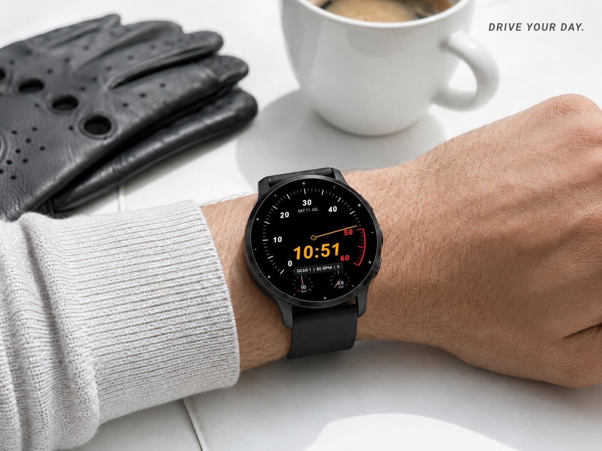

Watch faces · Watch face
Racing dashboard with heart-rate zones.




Every second, full throttle.
Your wrist becomes a racing dashboard. The dial around the edge is a real
tachometer counting the seconds: the needle climbs into the red zone at the
end of every minute, then snaps back to zero like a gear shift.
minutes in always-on mode, so it never stands still)
rate zone (1-5) - push harder, shift up
on empty
Pure black background, warm amber and racing red - and in always-on mode
the whole dashboard stays visible, dimmed to half brightness.
Questions or ideas? Leave a review or contact the developer.